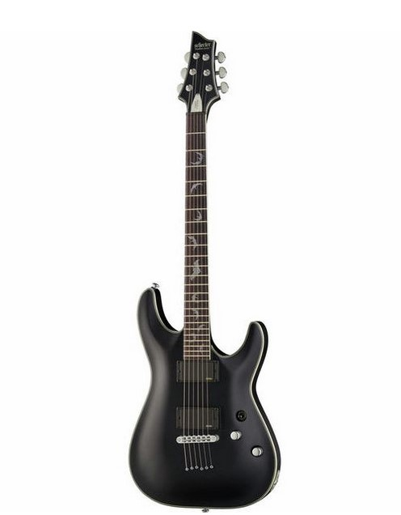

EVH 5150 Standard Stealth

Electric Guitar
Body: Mahogany
Set-in neck: Maple
Fingerboard: Rosewood
Platinum Bat fingerboard inlays
Neck profile: Thin C
Nut: Graph Tech XL Black TUSQ
Nut width: 42 mm (1.65")
Scale: 48 mm (25.51")
Fingerboard radius: 355 mm (13.98")
Binding: Silver / Platinum multi-ply
Frets: 24 Jumbo
Pickups: active EMG 81 (bridge) and EMG 85 (neck) humbuckers
Controls: Volume and tone
Three-way switch
Tune-O-Matic bridge with string-thru-body
Hardware finish: Chrome
Grover machine heads
Colour: Black Matte